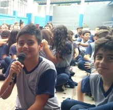

Introdução
Aqui neste site estão minhas memorias escolares que me marcaram minha vida do inicio ate atualmente.
Ensino Fundamental do 6º ao 9º
Data:15 de fevereiro de 2018
Primeiro dia de aula, neste dia, como todos não se conheciam então todos estavam tentando fazer amizade uns com os outros, eu era meio quieto então fiquei mais na minha so entrei na sala e esperei a aula começar, depois de umas quatro aulas eu ja tava cansado e a prof Suzana estava dando aula e eu ja estava meio sonolento, e logo no primeiro dia de aula eu acabei dormindo.
Ensino Médio
Data:14 De Junho de 2024
nesses anos que eu estudei no colegio são sebatião, aprendi diversar coisas, conheci varias pessoas, que marcaram a minha vida incluindo essa pessoa que posso chamar de amigo.
Acontecimento Marcante
Data:2° trimestre de 2023
Essa data foi marcante, pois ganhei um certificado de melhor desempenho da minha sala